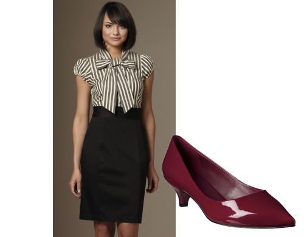
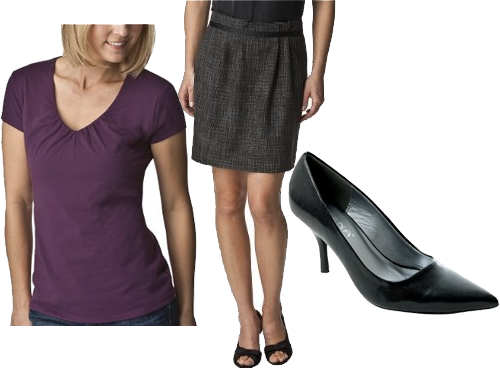

Colorblocking has been a big trend lately and I must say I am a big fan. The limited has some uber cute options for anyone who shares my opinion of this trend. That kimono top and halter top are needed in my wardrobe stat!
Limitless
April 12, 2011 by
Has anyone else browsed The Limited’s website or store lately? I had no idea they had such cute clothes, and they are pretty reasonably priced. I have shared a few items with you in previous posts, but here are a few more items I am drooling over…
Flower Child
April 6, 2011 by

I love me a good floral print. Combine that with the high-waisted and wide leg bottoms coming back in style and I am definitely feeling my inner flower child coming out. Here are a few items I wouldn’t mind having in my closet…
- Target, MS Floral Top
- Target, Xhileration Ruffle Sleeveless Dress
- Oldnavy, Women’s Floral Scarf
- Modcloth, Poppy Go Lucky Tank
- Forever 21, Jeena Floral Dress
- The Limited, Floral Strapless Dress
- Modcloth, Everyday Bouquet Dress
- The Limited, Pinched Ruffed Neck Top
Don’t Get Pinched This Year
March 15, 2011 by

We all know St. Patrick’s Day is coming up later this week. And if you didn’t, now you do. I thought I would give you ladies a few options to wear so you don’t get pinched while out enjoying a green beer (or two…or three..) Slainte!!
- Forever 21, Geometric Bow Waist Dress
- Amazon, OPI Green-Wich Village Nail Color
- Modcloth, Link Happy Thoughts Sandal
- DSW, Coconuts Mena Wedge Sandal
- Target, Twisted Seed Beaded Necklace
- The Limited, Ruffle Front Top
- The Limited, Green Striped Strapless Dress
- Target, Merona Tahira Sleeveless Top
- Boden, Ruffled Ribbon Necklace
- The Limited, Wow Ruffle Shirt
Outfit Request: Defending a Thesis
March 9, 2011 by
I got a request yesterday from a Tipsy reader asking my opinion about what to wear when defending a thesis in a science field. For those of you who don’t know any science-minded people, many of them are a tad bit challenged when it comes to style. And by a tad bit, I mean a whole lot. Because they often dress super casual for work (jeans and socks with sandals…eek!), the goal is to look professional without being too dressy (i.e. no suits). Here are a few options I came up with…
option 1. Fixed Bow Striped Sheath Dress +Mossimo Black Vanette Kitten Heel Pumps

option 2. Merona Collection Jillian Crosshatch Skirt + Merona Women’s Double Layer Shirred V-Neck Top + Adi Desings Classic Pointed Toe Pumps

option 3. Ruffle and Striped Belted Dress + Cuffed Sleeve V-Neck Cardigan + Mossimo Pearce Pumps
option 4. Banded Waist Button Front Shirt + Chino Solid Ruffle Skirt + Mossimo Pearce Pumps

For those of you looking for something less trendy, you can never go wrong with a classic sheath dress!
Gift Wrapped
November 19, 2010 by
The bow trend has been done on flats, heels, cardigans, headbands and now even on jewelry. It’s a nice feminine touch for those of you who don’t want all the frills.
- Charlotte Russe, Black Rhinestone Bow Ring
- The Limited, Bow Stud Earrings
- Charlotte Russe, Black Bow Ring
- Charlotte Russe, Shiny Gold Bow Necklace
- Charlotte Russe, Layered Bow Necklace


Recent Comments